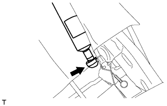
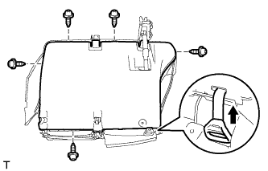
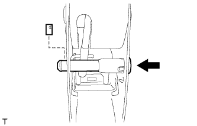

ЦЕНТРАЛЬНЫЙ РЕМЕНЬ БЕЗОПАСНОСТИ ЗАДНЕГО СИДЕНЬЯ В СБОРЕ (для моделей с опускаемым сиденьем раздельного типа 60/40 с левой стороны) > УСТАНОВКА |
| 1. УСТАНОВИТЕ ЛЕВЫЙ 3-ТОЧЕЧНЫЙ РЕМЕНЬ БЕЗОПАСНОСТИ СИДЕНЬЯ № 1 В СБОРЕ |
Совместите установочные отверстия ремня безопасности с захватами и закрепите устройство вытяжения 3-точечного ремня безопасности гайкой, как показано на рисунке.
Установите датчик ремня безопасности и закрепите его 3 гайками.
| 2. УСТАНОВИТЕ НАПРАВЛЯЮЩУЮ ПЛЕЧЕВОГО КРЕПЛЕНИЯ РЕМНЯ ЗАДНЕГО СИДЕНЬЯ |
Введите в зацепление 4 направляющих, чтобы закрепить направляющую ремня.
Подсоедините ремень безопасности к направляющей ремня.
Введите в зацепление 2 захвата, чтобы закрыть крышку.
| 3. УСТАНОВИТЕ НАКЛАДКУ ЛЕВОГО РЕГУЛЯТОРА НАКЛОНА |
Введите в зацепление 4 захвата, чтобы установить крышку.
Вверните 4 винта.
| 4. УСТАНОВИТЕ ВНУТРЕННЮЮ ОТКИДНУЮ КРЫШКУ ПРАВОГО ЗАДНЕГО СИДЕНЬЯ |
Введите в зацепление 2 захвата, чтобы установить крышку.
| 5. УСТАНОВИТЕ ОБИВКУ СПИНКИ РАЗДЕЛЬНОГО ЗАДНЕГО СИДЕНЬЯ |
Установите обивку спинки сиденья, закрепите ее 2 новыми витковыми пружинами и установите крепежную ленту.
С помощью щипцов для витковых пружин установите новые витковые пружины.
| *1 | Щипцы для витковых пружин | *2 | Крепежная лента |
| 6. УСТАНОВИТЕ ОБИВКУ СПИНКИ СИДЕНЬЯ ВМЕСТЕ С ПОДУШКОЙ |
Подсоедините ремень безопасности к обивке спинки сиденья с подушкой.
Присоедините 2 крепления, чтобы установить обивку спинки сиденья с подушкой.
| 7. УСТАНОВИТЕ ДЕРЖАТЕЛЬ ПОДГОЛОВНИКА ЗАДНЕГО СИДЕНЬЯ № 1 В СБОРЕ |
Введите в зацепление 8 захвата, чтобы закрепить 4 держателя.
| 8. УСТАНОВИТЕ РЫЧАГ ЗАМКА ЛЕВОГО ЗАДНЕГО СИДЕНЬЯ В СБОРЕ |
 |
Подсоедините трос в порядке, показанном на рисунке, и установите рычаг.
Вверните 2 винта.
| 9. УСТАНОВИТЕ КРЫШКУ ЗАЩЕЛКИ ЗАМКА СПИНКИ ЗАДНЕГО СИДЕНЬЯ |
 |
Введите в зацепление направляющую и захват, чтобы установить крышку.
| 10. УСТАНОВИТЕ КРЫШКУ ОТВЕРСТИЯ ПЛЕЧЕВОГО КРЕПЛЕНИЯ РЕМНЯ ЛЕВОГО ЗАДНЕГО СИДЕНЬЯ |
Подсоедините ремень безопасности к крышке.
 |
Введите в зацепление 4 захвата, чтобы установить крышку.
| 11. УСТАНОВИТЕ КРЫШКУ ПЛЕЧЕВОГО КРЕПЛЕНИЯ РЕМНЯ БЕЗОПАСНОСТИ |
Закрепите 2 захвата и 2 направляющих, чтобы установить крышку.
| 12. УСТАНОВИТЕ ОПОРУ ПОДЛОКОТНИКА ЗАДНЕГО СИДЕНЬЯ |
Установите опору подлокотника на петлю подлокотника.
| 13. УСТАНОВИТЕ ПЕТЛЮ ЦЕНТРАЛЬНОГО ПОДЛОКОТНИКА ЗАДНЕГО СИДЕНЬЯ |
Закрепите петлю подлокотника винтом.
| 14. УСТАНОВИТЕ ПОДЛОКОТНИК ЗАДНЕГО ЦЕНТРАЛЬНОГО СИДЕНЬЯ В СБОРЕ |
Закрепите центральный подлокотник и втулку 2 болтами.
| 15. УСТАНОВИТЕ ВНУТРЕННЮЮ ОТКИДНУЮ КРЫШКУ ПРАВОГО ЗАДНЕГО СИДЕНЬЯ |
Закрепите 2 направляющие и 2 захвата, чтобы установить накладку.
| 16. УСТАНОВИТЕ ПОДУШКУ СПИНКИ ЛЕВОГО СИДЕНЬЯ № 1 |
Установите подушку спинки сиденья.
Закройте 2 крепления, а затем закройте обивку спинки сиденья.
С помощью щипцов для витковых пружин установите 6 новые витковые пружины.
| *1 | Щипцы для витковых пружин |
Установите 3 крепежные ленты и закройте крышку.
Подсоедините ремень безопасности с помощью болта.
| *1 | Выступающая часть |
| 17. УСТАНОВИТЕ ОБИВКУ СПИНКИ ЗАДНЕГО СИДЕНЬЯ |
Введите в зацепление 8 захватов, чтобы закрепить 2 крышки.
| 18. ПОДСОЕДИНИТЕ ЛЕВЫЙ 3-ТОЧЕЧНЫЙ РЕМЕНЬ БЕЗОПАСНОСТИ СИДЕНЬЯ № 1 В СБОРЕ |
Закрепите ремень безопасности болтом.
| *a | Выступающая часть |
| 19. УСТАНОВИТЕ ОБИВКУ ПОДУШКИ ЛЕВОГО ЗАДНЕГО СИДЕНЬЯ В СБОРЕ |
Установите обивку подушки сиденья на подушку сиденья и закрепите ее новыми витковыми пружинами, используя щипцы для витковых пружин.
| *1 | Щипцы для витковых пружин |
| 20. УСТАНОВИТЕ ВНУТРЕННЕЕ КРАЕВОЕ УКРЕПЛЕНИЕ ПОДУШКИ ЛЕВОГО ЗАДНЕГО СИДЕНЬЯ |
Закрепите краевое укрепление новыми закрепками.
| 21. УСТАНОВИТЕ ОБИВКУ ПОДУШКИ СИДЕНЬЯ ВМЕСТЕ С ПОДУШКОЙ |
Используя щипцы для витковых пружин, закрепите обивку спинки сиденья с подушкой новыми витковыми пружинами.
| *1 | Щипцы для витковых пружин |
Установите коврик и закрепите его новыми закрепками.
| 22. УСТАНОВИТЕ НАКЛАДКУ ПРАВОЙ ПЕТЛИ ЗАДНЕГО СИДЕНЬЯ № 2 |
Введите в зацепление 3 захвата, чтобы установить крышку.
| 23. УСТАНОВИТЕ НАКЛАДКУ ПЕТЛИ ЛЕВОГО ЗАДНЕГО СИДЕНЬЯ № 2 |
Введите в зацепление 3 захвата, чтобы установить крышку.
| 24. УСТАНОВИТЕ НИЖНЮЮ КРЫШКУ ПОДУШКИ ЛЕВОГО ЗАДНЕГО СИДЕНЬЯ В СБОРЕ |
Временно установите нижнюю крышку на каркас подушки сиденья.
| 25. УСТАНОВИТЕ ОПОРНУЮ ПРУЖИНУ ПОДУШКИ ЗАДНЕГО СИДЕНЬЯ |
Установите пружину на раму подушки сиденья
| 26. УСТАНОВИТЕ КРАЕВОЕ УКРЕПЛЕНИЕ ПОДУШКИ ЗАДНЕГО СИДЕНЬЯ |
Установите защитный элемент на каркас подушки.
| 27. УСТАНОВИТЕ ПЕТЛЮ ПРАВОГО ЗАДНЕГО СИДЕНЬЯ В СБОРЕ |
Установите петлю.
Установите штифт на петлю.
Установите новое разрезное уплотнение.
| 28. УСТАНОВИТЕ СТОЙКУ ЗАДНЕГО СИДЕНЬЯ В СБОРЕ |
Подсоедините шаровой шарнир стойки сиденья к петле сиденья.
| 29. УСТАНОВИТЕ ПЕТЛЮ ЛЕВОГО ЗАДНЕГО СИДЕНЬЯ В СБОРЕ |
Установите пружину шарового шарнира стойки сиденья.
Временно установите петлю сиденья и стойку сиденья как единый узел.
Поднимите нижнюю крышку.
|  |
Подсоедините стойку сиденья к раме подушки сиденья.
|  |
Подсоедините ручку отпускания регулятора наклона к нижней крышке.
Заверните 5 винта.
Установите нижнюю крышку, для чего введите в зацепление 10 захватов.
Установите штифт на петлю.
Установите новое разрезное уплотнение.
| 30. УСТАНОВИТЕ НАПРАВЛЯЮЩУЮ ШТИФТА ПЕТЛИ ЗАДНЕГО СИДЕНЬЯ |
Введите в зацепление 4 захвата, чтобы установить направляющую штифта.
| 31. УСТАНОВИТЕ ШТИФТ РЫЧАГА ОТПИРАНИЯ НАПРАВЛЯЮЩЕЙ СИДЕНЬЯ В СБОРЕ |
|  |
Установите штифт, как показано на рисунке.
Установите стопор.
| 32. УСТАНОВИТЕ ЛЕВУЮ ВНУТРЕННЮЮ КРЫШКУ РЕГУЛЯТОРА НАКЛОНА |
Введите в зацепление 2 захвата, чтобы закрепить крышку.
Заверните 2 винта.
| 33. УСТАНОВИТЕ ПОДУШКУ ЗАДНЕГО СИДЕНЬЯ № 2 |
Закрепите подушку винтом.
| 34. УСТАНОВИТЕ ОТКИДНУЮ КРЫШКУ ПРАВОГО ЗАДНЕГО СИДЕНЬЯ № 1 |
Введите в зацепление 2 крюка.
 |
Присоедините направляющую и 2 захвата, чтобы закрепить щиток.
Заверните 2 винта.
| 35. УСТАНОВИТЕ ОТКИДНУЮ КРЫШКУ ЛЕВОГО ЗАДНЕГО СИДЕНЬЯ |
 |
Присоедините направляющую и 2 захвата, чтобы закрепить щиток.
Заверните 2 винта.
| 36. УСТАНОВИТЕ ЛЕВОЕ ЗАДНЕЕ СИДЕНЬЕ № 1 В СБОРЕ |
Установите левое заднее сиденье № 1 в сборе (Нажмите здесь).